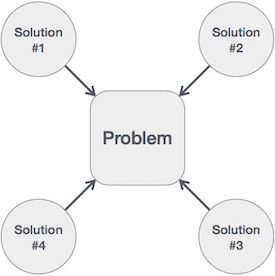

As applications are getting complex and data rich, there are three common problems that applications face now-a-days.
- Data Search − Consider an inventory of 1 million(106) items of a store. If the application is to search an item, it has to search an item in 1 million(106) items every time slowing down the search. As data grows, search will become slower.
- Processor speed − Processor speed although being very high, falls limited if the data grows to billion records.
- Multiple requests − As thousands of users can search data simultaneously on a web server, even the fast server fails while searching the data.
To solve the above-mentioned problems, data structures come to rescue. Data can be organized in a data structure in such a way that all items may not be required to be searched, and the required data can be searched almost instantly.
Data Structures are the programmatic way of storing data so that data can be used efficiently. Almost every enterprise application uses various types of data structures in one or the other way. This tutorial will give you a great understanding on Data Structures needed to understand the complexity of enterprise level applications and need of algorithms, and data structures.
Algorithm is a step-by-step procedure, which defines a set of instructions to be executed in a certain order to get the desired output. Algorithms are generally created independent of underlying languages, i.e. an algorithm can be implemented in more than one programming language.
From the data structure point of view, following are some important categories of algorithms −
- Search − Algorithm to search an item in a data structure.
- Sort − Algorithm to sort items in a certain order.
- Insert − Algorithm to insert item in a data structure.
- Update − Algorithm to update an existing item in a data structure.
- Delete − Algorithm to delete an existing item from a data structure.
The following computer problems can be solved using Data Structures −
- Fibonacci number series
- Knapsack problem
- Tower of Hanoi
- All pair shortest path by Floyd-Warshall
- Shortest path by Dijkstra
- Project scheduling
This tutorial is designed for Computer Science graduates as well as Software Professionals who are willing to learn data structures and algorithm programming in simple and easy steps.
After completing this tutorial you will be at intermediate level of expertise from where you can take yourself to higher level of expertise.
Prerequisites
Before proceeding with this tutorial, you should have a basic understanding of C programming language, text editor, and execution of programs, etc.
Algorithm is a step-by-step procedure, which defines a set of instructions to be executed in a certain order to get the desired output. Algorithms are generally created independent of underlying languages, i.e. an algorithm can be implemented in more than one programming language.
From the data structure point of view, following are some important categories of algorithms −
- Search − Algorithm to search an item in a data structure.
- Sort − Algorithm to sort items in a certain order.
- Insert − Algorithm to insert item in a data structure.
- Update − Algorithm to update an existing item in a data structure.
- Delete − Algorithm to delete an existing item from a data structure.
Characteristics of an Algorithm
Not all procedures can be called an algorithm. An algorithm should have the following characteristics −
- Unambiguous− Algorithm should be clear and unambiguous. Each of its steps (or phases), and their inputs/outputs should be clear and must lead to only one meaning.
- Input − An algorithm should have 0 or more well-defined inputs.
- Output − An algorithm should have 1 or more well-defined outputs, and should match the desired output.
- Finiteness − Algorithms must terminate after a finite number of steps.
- Feasibility − Should be feasible with the available resources.
- Independent − An algorithm should have step-by-step directions, which should be independent of any programming code.
How to Write an Algorithm?
There are no well-defined standards for writing algorithms. Rather, it is problem and resource dependent. Algorithms are never written to support a particular programming code.
As we know that all programming languages share basic code constructs like loops (do, for, while), flow-control (if-else), etc. These common constructs can be used to write an algorithm.
We write algorithms in a step-by-step manner, but it is not always the case. Algorithm writing is a process and is executed after the problem domain is well-defined. That is, we should know the problem domain, for which we are designing a solution.
Example
Let's try to learn algorithm-writing by using an example.
Problem − Design an algorithm to add two numbers and display the result.
Step 1 − START
Step 2 − declare three integers a, b & c
Step 3 − define values of a & b
Step 4 − add values of a & b
Step 5 − store output of step 4 to c
Step 6 − print c
Step 7 − STOP
Algorithms tell the programmers how to code the program. Alternatively, the algorithm can be written as −
Step 1 − START ADD
Step 2 − get values of a & b
Step 3 − c ← a + b
Step 4 − display c
Step 5 − STOP
Writing step numbers, is optional.
We design an algorithm to get a solution of a given problem.A problem can be solved in more than one ways.
Algorithm Analysis
Efficiency of an algorithm can be analyzed at two different stages, before implementation and after implementation. They are the following −
- A Priori Analysis − This is a theoretical analysis of an algorithm. Efficiency of an algorithm is measured by assuming that all other factors, for example, processor speed, are constant and have no effect on the implementation.
- A Posterior Analysis− This is an empirical analysis of an algorithm. The selected algorithm is implemented using programming language. This is then executed on target computer machine. In this analysis, actual statistics like running time and space required, are collected.
Data Definition defines a particular data with the following characteristics.
- Atomic
- Traceable
- Accurate
- Clear and Concise
Data Object
Data Object represents an object having a data.
Data Type
Data type is a way to classify various types of data such as integer, string, etc. which determines the values that can be used with the corresponding type of data, the type of operations that can be performed on the corresponding type of data. There are two data types −
- Built-in Data Type
- Derived Data Type
Built-in Data Type
Those data types for which a language has built-in support are known as Built-in Data types. For example, most of the languages provide the following built-in data types.
- Integers
- Boolean (true, false)
- Floating (Decimal numbers)
- Character and Strings
Derived Data Type
Those data types which are implementation independent as they can be implemented in one or the other way are known as derived data types. These data types are normally built by the combination of primary or built-in data types and associated operations on them. For example −
- List
- Array
- Stack
- Queue
Basic Operations
The data in the data structures are processed by certain operations. The particular data structure chosen largely depends on the frequency of the operation that needs to be performed on the data structure.
- Traversing
- Searching
- Insertion
- Deletion
- Sorting
- Merging
All the documentation in this page is taken fromTutorialspoint